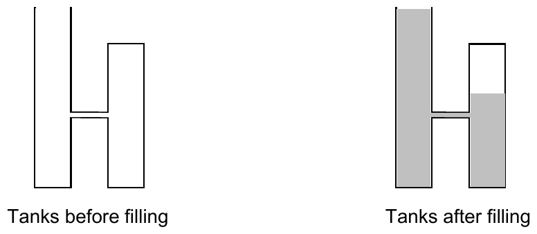

2007 ICPC World Finals · Problem I
The Aqua Container Management company manages water storage facilities. They are considering a system of storing water in a series of connected vertical tanks. Each tank has a horizontal cross-sectional area of one square meter, but the tanks have different heights. The base of each tank is at ground level. Each tank is connected by a pipe to the previous tank in the series and by another pipe to the next tank in the series. The pipes connecting the tanks are level and are at increasing heights (that is, the pipe connecting tank i to tank i+1 is at a higher level than the pipe connecting tank i to tank i-1.) Tank 1 is open so that air and water can flow into it freely at the top. All the other tanks are closed so that air and water can flow in and out only through the connecting pipes. The connecting pipes are large enough that water and air can flow through them freely and simultaneously but small enough that their dimensions can be ignored in this problem.
The series of tanks is filled by pouring water slowly into the top of tank 1, continuing until the water level reaches the top of tank 1. As the water level rises above the connecting pipes, water flows among the tanks.
Aqua Container Management needs a program to compute the cubic meters of water that can be poured into the series of tanks before the water level reaches the top of tank 1.
The figure below illustrates a simple case involving only two tanks. After the filling procedure is completed, the air in the upper part of the second tank is compressed (its air pressure is greater than one atmosphere), so the water level in the second tank is lower than the water level in the first tank.

The following physical principles are helpful in solving this problem (some of these are approximations that are acceptable for the purposes of this problem):
The input consists of several test cases representing different series of water tanks. Each test case has three lines of data. The first line contains an integer N (2 ≤ N ≤ 10) which is the number of tanks in the test case. The second line contains N positive floating point numbers that are the heights, in meters, of tanks 1 through N. The third line contains N-1 floating point numbers. On this line, the kth number represents the height above the ground of the pipe that connects tank k and tank k+1. The numbers on the third line are increasing (each number is greater than the preceding number).
The last test case is followed by a line containing the integer zero.
For each test case, print a line containing the test case number (beginning with 1) followed by the amount of water, in cubic meters, that can be poured into tank 1 before the water level reaches the top of tank 1. Print the results with three digits to the right of the decimal point.
Print a blank line after the output for each test case. Use the format of the sample output.
2 10.0 8.0 4.0 0
Case 1: 15.260